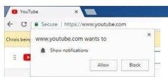

Basic & Advanced Selenium Interview Questions: study
1. What is Automation Testing?
Automation testing is the process of testing a software or application using an automation testing tool to
find the defects. In this process, executing the test scripts and generating the results are performed
automatically by automation tools. It is required when we have huge amount of regression test cases. Some most
popular tools to do automation testing are HP QTP/UFT, Selenium WebDriver, etc.,
2. What are the benefits of Automation Testing?
This is one of the common interview questions in any Automation testing job.
Saves time and money. Automation testing is faster in execution.
Reusability of code. Create one time and execute multiple times with less or no maintenance.
Easy reporting. It generates automatic reports after test execution.
Easy for compatibility testing. It enables parallel execution in the combination of different OS and browser environments.
Low-cost maintenance. It is cheaper compared to manual testing in a long run.
Automated testing is more reliable.
Automated testing is more powerful and versatile. Automation tools allow us to integrate with Cross Browser
Testing Tools, Jenkins, Github etc.,
It is mostly used for regression testing. Supports execution of repeated test cases.
Minimal manual intervention. Test scripts can be run unattended.
Maximum coverage. It helps to increase the test coverage.
3. What are the challenges and limitations of Selenium WebDriver?
As we all know Selenium WebDriver is a tool which automates the browser to mimic real user actions on the web.
Selenium is a free open source testing tool. Some of the challenges with selenium webdriver are as follows
We cannot test windows application
We cannot test mobile apps
Limited reporting
Handling dynamic Elements
Handling page load
Handling pop up windows
Handling captcha
4. What type of tests have you automated?
Our main focus is to automate test cases to do Regression testing, Smoke testing, and Sanity testing.
Sometimes based on the project and the test time estimation, we do focus on End to End testing.
5. How many test cases you have automated per day?
It depends on Test case scenario complexity and length. I did automate 2-5 test scenarios per day when the
complexity is limited. Sometimes just 1 or fewer test scenarios in a day when the complexity is high.
6. What is a Framework?
A framework defines a set of rules or best practices which we can follow in a systematic way to achieve
the desired results. There are different types of automation frameworks and the most common ones are:
Data Driven Testing Framework
Keyword Driven Testing Framework
Hybrid Testing Framework
7. Have you created any Framework?
If you are a beginner: You can say "No, I didn't get a chance to create framework from the scratch.
I have used the framework which is already available. My contribution is mostly in creating test cases by
using the existing framework."
If you are a beginner but have good knowledge on creating framework: You can say "Yes, I have involved in
developing framework along with other automation tester in my company."
If you are an experienced tester: You can say "I have contributed in developing framework." or You can say
"Yes, I have created framework from the scratch. There was no automation process in my previous company.
I designed the framework from the scratch."
9. Why do you prefer Selenium Automation Tool?
Free and open source
Have large user base and helping communities
Cross-browser compatibility
Platform compatibility
Multiple programming languages support such as Java, Perl, Phyton, Php, C# etc.,
10. What is Selenium?
Selenium is an open source (free) automated testing suite to test web applications. It supports different
platforms and browsers. It has gained a lot of popularity in terms of web-based automated testing and giving
a great competition to the famous commercial tool HP QTP (Quick Test Professional) AKA HP UFT (Unified
Functional Testing).
Selenium is a set of different software tools. Each tool has a different approach in supporting web based
automation testing.
It has four components namely,
Selenium IDE (Selenium Integrated Development Environment)
Selenium RC (Selenium Remote Control)
Selenium WebDriver
Selenium Grid
11. What is Selenium IDE?
Selenium IDE (Integrated Development Environment) is a Firefox plugin. It is the simplest framework in
the Selenium Suite. It allows us to record and playback the scripts. Even though we can create scripts
using Selenium IDE, we need to use Selenium RC or Selenium WebDriver to write more advanced and robust test cases.
12. What is Selenese?
Selenese is the language which is used to write test scripts in Selenium IDE.
13. Which is the only browser that supports Selenium IDE to be used?
Firefox
14. What is Selenium RC?
Selenium RC AKA Selenium Remote control / Selenium 1. Selenium Remote Control was the main Selenium project
for a long time before the WebDriver merge brought up Selenium 2. Selenium 1 is still actively supported (in
maintenance mode). It relies on JavaScript for automation. It supports Java, Javascript, Ruby, PHP, Python,
Perl and C#. It supports almost every browser out there.
15. What is Selenium WebDriver?
Selenium WebDriver AKA Selenium 2 is a browser automation framework that accepts commands and sends them to a browser.
It is implemented through a browser-specific driver. It controls the browser by directly communicating with it.
Selenium WebDriver supports Java, C#, PHP, Python, Perl, Ruby.
16. What is Selenium Grid?
Selenium Grid is a tool used together with Selenium RC to run tests on different machines against different browsers
in parallel. That is, running multiple tests at the same time against different machines running different browsers
and operating systems.
In simple words, it is used to distribute your test execution on multiple platforms and environments concurrently.
17. When do you use Selenium Grid?
Selenium Grid can be used to execute same or different test scripts on multiple platforms and browsers concurrently so
as to achieve distributed test execution
18. What are the advantages of Selenium Grid?
It allows running test cases in parallel thereby saving test execution time.
It allows multi-browser testing
It allows us to execute test cases on multi-platform
19. What is a hub in Selenium Grid?
A hub is a server or a central point that controls the test executions on different machines.
20. What is a node in Selenium Grid?
Node is the machine which is attached to the hub. There can be multiple nodes in Selenium Grid.
21. What are the types of WebDriver APIs available in Selenium?
Firefox Driver
Gecko Driver
InternetExplorer Driver
Chrome Driver
HTMLUnit Driver
Opera Driver
Safari Driver
Android Driver
iPhone Driver
EventFiringWebDriver
22. Which WebDriver implementation claims to be the fastest?
The fastest implementation of WebDriver is the HTMLUnitDriver. It is because the HTMLUnitDriver does not execute tests
in the browser.
23. What are the Programming Languages supported by Selenium WebDiver?
Java
C#
Python
Ruby
Perl
PHP
24. What are the Operating Systems supported by Selenium WebDriver?
Windows
Linux
Apple
25. What are the Open-source Frameworks supported by Selenium WebDriver?
JUnit
TestNG
26. What are the Locators available in Selenium?
In Selenium WebDriver, there are 8 different types of locators:
ID
ClassName
Name
TagName
LinkText
PartialLinkText
XPath
CSS Selector
27. What is an XPath?
XPath is used to locate the elements. Using XPath, we could navigate through elements and attributes in an XML
document to locate web elements such as textbox, button, checkbox, Image etc., in a web page.
28. What is the difference between "/" and "//"
Single Slash "/" - Single slash is used to create XPath with absolute path i.e. the XPath would be created to
start selection from the document node/start node.
Double Slash "//" - Double slash is used to create XPath with relative path i.e. the XPath would be created to
start selection from anywhere within the document.
29. What is the difference between Absolute Path and Relative Path?
Absolute XPath starts from the root node and ends with desired descendant element's node. It starts with top
HTML node and ends with input node. It starts with a single forward slash(/) as shown below.
| /html/body/div[3]/div[1]/form/table/tbody/tr[1]/td/input |
Relative XPath starts from any node in between the HTML page to the current element's node(last node of the element).
It starts with a double forward slash(//) as shown below.
30. What is the difference between Assert and Verify in Selenium?
Assert: In simple words, if the assert condition is true then the program control will execute the next test
step but if the condition is false, the execution will stop and further test step will not be executed.
Verify: In simple words, there won't be any halt in the test execution even though the verify condition is true
or false.
31. What are Soft Assert and Hard Assert in Selenium?
Soft Assert: Soft Assert collects errors during @Test Soft Assert does not throw an exception when an assert fails
and would continue with the next step after the assert statement.
Hard Assert: Hard Assert throws an AssertException immediately when an assert statement fails and test suite continues
with next @Test
32. What are the verification points available in Selenium?
In Selenium IDE, we use Selenese Verify and Assert Commands as Verification points
In Selenium WebDriver, there is no built-in features for verification points. It totally depends on our coding
style. some of the Verification points are
To check for page title
To check for certain text
To check for certain element (text box, button, drop down, etc.)
33. How to launch a browser using Selenium WebDriver?
WebDriver is an Interface. We create an Object of a required driver class such as FirefoxDriver, ChromeDriver,
InternetExplorerDriver etc.,
To launch Firefox Driver:
WebDriver driver = new FirefoxDriver();
Note: If you use geckodriver with Selenium, you must upgrade to Selenium 3.3. Here we have to set the property as follows
| System.setProperty("webdriver.gecko.driver", "D:\\Selenium Environment\\Drivers\\geckodriver.exe"); |
To launch Chrome Driver:
WebDriver driver = new ChromeDriver();
To launch Internet Explorer Driver:
WebDriver driver = new InternetExplorerDriver();
To launch Safari Driver:
WebDriver driver = new SafariDriver();
34. Is the FirefoxDriver a Class or an Interface?
FirefoxDriver is a Java class, and it implements the WebDriver interface.
35. What is the super interface of WebDriver?
SearchContext.
36. Explain the line of code Webdriver driver = new FirefoxDriver(); ?
| Webdriver driver = new FirefoxDriver(); |
'WebDriver' is an interface and we are creating an object of type WebDriver instantiating an object of FirefoxDriver
class.
37. We do create a reference variable 'driver' of type WebDriver
| WebDriver driver = new FirefoxDriver(); instead of creating FirefoxDriver driver = new FirefoxDriver(); |
What is the purpose of doing this way?
If we create a reference variable driver of type WebDriver then we could use the same driver variable to work with
any browser of our choice such as IEDriver, SafariDriver etc.,
38. What are the different exceptions you have faced in Selenium WebDriver?
Some of the exceptions I have faced in my current project are
ElementNotVisibleException
StaleElementReferenceException
Element Not visible Exception:
This exception will be thrown when you are trying to locate a particular element on webpage that is not currently
visible eventhough it is present in the DOM. Also sometimes, if you are trying to locate an element with the xpath
which associates with two or more element.
Stale Element Reference Exception:
A stale element reference exception is thrown in one of two cases, the first being more common than the second.
The two reasons for Stale element reference are
The element has been deleted entirely.
The element is no longer attached to the DOM.
We face this stale element reference exception when the element we are interacting is destroyed and then recreated
again. When this happens the reference of the element in the DOM becomes stale. Hence we are not able to get the
reference to the element.
Some other exceptions we usually face are as follows:
WebDriverException
IllegalStateException
TimeoutException
NoAlertPresentException
NoSuchWindowException
NoSuchElementException
39. How to Login into any site if it is showing an Authentication Pop-Up for Username and Password?
To do this we pass username and password with the URL
40. What are the types of waits available in Selenium WebDriver?
In Selenium we could see three types of waits such as Implicit Waits, Explicit Waits and Fluent Waits.
41. What is Implicit Wait In Selenium WebDriver?
Implicit waits tell to the WebDriver to wait for a certain amount of time before it throws an exception. Once we set
the time, WebDriver will wait for the element based on the time we set before it throws an exception. The default
setting is 0 (zero). We need to set some wait time to make WebDriver to wait for the required time.
42. What is WebDriver Wait In Selenium WebDriver?
WebDriverWait is applied on a certain element with defined expected condition and time. This wait is only applied to
the specified element. This wait can also throw an exception when an element is not found.
43. What is Fluent Wait In Selenium WebDriver?
FluentWait can define the maximum amount of time to wait for a specific condition and frequency with which to check
the condition before throwing an "ElementNotVisibleException" exception.
44. How to input text in the text box using Selenium WebDriver?
By using sendKeys() method
| WebDriver driver = new FirefoxDriver(); driver.get("https://www.gmail.com"); driver.findElement(By.xpath("xpath")).sendKeys("Software Testing Material Website"); |
45. How to input text in the text box without calling the sendKeys()?
| // To initialize js object JavascriptExecutor JS = (JavascriptExecutor)webdriver; // To enter username JS.executeScript("document.getElementById('User').value='SoftwareTestingMaterial.com'"); // To enter password JS.executeScript("document.getElementById('Pass').value='tester'"); |
46. How to clear the text in the text box using Selenium WebDriver?
By using clear() method
| WebDriver driver = new FirefoxDriver(); driver.get("https://www.gmail.com"); driver.findElement(By.xpath("xpath_of_element1")).sendKeys("Software Testing Material Website"); driver.findElement(By.xpath("xpath_of_element1")).clear(); |
47. How to get a text of a web element?
By using getText() method
| package softwareTestingMaterial; import org.openqa.selenium.By; import org.openqa.selenium.WebDriver; import org.openqa.selenium.chrome.ChromeDriver; import org.testng.annotations.Test; public class TestTestTest { @Test public void testmethod(){ System.setProperty("webdriver.chrome.driver", "D:\\Selenium Environment\\Drivers\\chromedriver.exe"); WebDriver driver = new ChromeDriver(); driver.get("https://www.google.com"); String availableText = driver.findElement(By.xpath("//*[@id='gbw']/div/div/div[1]/div[1]/a")).getText(); System.out.println("Text Available is :"+availableText); } } |
48. How to get an attribute value using Selenium WebDriver?
By using getAttribute(value);
It returns the value of the attribute passed as a parameter.
HTML:
| <input name="nameSelenium" value="valueSelenium">SoftwareTestingMaterial</input> |
Selenium Code:
| String attributeValue = driver.findElement(By.name("nameSelenium")).getAttribute("value"); System.out.println("Available attribute value is :"+attributeValue); Output: valueSelenium |
49. How to click on a hyperlink using Selenium WebDriver?
We use click() method in Selenium to click on the hyperlink
| driver.findElement(By.linkText("Software Testing Material Website")).click(); |
50. How to submit a form using Selenium WebDriver?
We use "submit" method on element to submit a form
| driver.findElement(By.id("form_1")).submit(); |
Alternatively, you can use click method on the element which does form submission
51. How to press ENTER key on text box In Selenium WebDriver?
To press ENTER key using Selenium WebDriver, We need to use Selenium Enum Keys with its constant ENTER.
| driver.findElement(By.xpath("xpath")).sendKeys(Keys.ENTER); |
52. How to pause a test execution for 5 seconds at a specific point?
By using java.lang.Thread.sleep(long milliseconds) method we could pause the execution for a specific time. To pause
5 seconds, we need to pass parameter as 5000 (5 seconds)
53. Is Selenium Server needed to run Selenium WebDriver Scripts?
When we are distributing our Selenium WebDriver scripts to execute using Selenium Grid, we need to use Selenium Server.
54. What happens if I run this command. driver.get("www.softwaretestingmaterial.com") ;
An exception is thrown. We need to pass HTTP protocol within driver.get() method.
| driver.get("https://www.softwaretestingmaterial.com"); |
55. What is the alternative to driver.get() method to open an URL using Selenium WebDriver?
Alternative method to driver.get("url") method is driver.navigate.to("url")
56. What is the difference between driver.get() and driver.navigate.to("url")?
driver.get(): To open an URL and it will wait till the whole page gets loaded
driver.navigate.to(): To navigate to an URL and It will not wait till the whole page gets loaded
57. Can I navigate back and forth in a browser in Selenium WebDriver?
We use Navigate interface to do navigate back and forth in a browser. It has methods to move back, forward as well as
to refresh a page.
driver.navigate().forward(); - to navigate to the next web page with reference to the browser's history
driver.navigate().back(); - takes back to the previous webpage with reference to the browser's history
driver.navigate().refresh(); - to refresh the current web page thereby reloading all the web elements
driver.navigate().to("url"); - to launch a new web browser window and navigate to the specified URL
58. What are the different types of navigation commands?
Refer above question (Can I navigate back and forth in a browser)
59. How to fetch the current page URL in Selenium?
To fetch the current page URL, we use getCurrentURL()
60. How can we maximize browser window in Selenium?
To maximize browser window in selenium we use maximize() method. This method maximizes the current window if it is
not already maximized
| driver.manage().window().maximize(); |
61. How to delete cookies in Selenium?
To delete cookies we use deleteAllCookies() method
| driver.manage().deleteAllCookies(); |
62. What are the ways to refresh a browser using Selenium WebDriver?
There are multiple ways to refresh a page in selenium
Using driver.navigate().refresh() command as mentioned in the question 45
Using driver.get("URL") on the current URL or using driver.getCurrentUrl()
Using driver.navigate().to("URL") on the current URL or driver.navigate().to(driver.getCurrentUrl());
Using sendKeys(Keys.F5) on any textbox on the webpage
63. What is the difference between driver.getWindowHandle() and driver.getWindowHandles() in Selenium WebDriver?
driver.getWindowHandle() - It returns a handle of the current page (a unique identifier)
driver.getWindowHandles() - It returns a set of handles of the all the pages available.
64. What is the difference between driver.close() and driver.quit() methods?
Purpose of these two methods (driver.close and driver.quit) is almost same. Both allow us to close a browser but still,
there is a difference.
driver.close(): To close current WebDriver instance
driver.quit(): To close all the opened WebDriver instances
65. What is the difference between driver.findElement() and driver.findElements() commands?
The difference between driver.findElement() and driver.findElements() commands is-
findElement() returns a single WebElement (found first) based on the locator passed as parameter. Whereas findElements()
returns a list of WebElements, all satisfying the locator value passed.
Syntax of findElement()-
WebElement textbox = driver.findElement(By.id("textBoxLocator"));
Syntax of findElements()-
List elements = element.findElements(By.id("value"));
Another difference between the two is- if no element is found then findElement() throws NoSuchElementException whereas
findElements() returns a list of 0 elements.
66. How to find whether an element is displayed on the web page?
WebDriver facilitates the user with the following methods to check the visibility of the web elements. These web elements
can be buttons, drop boxes, checkboxes, radio buttons, labels etc.
isDisplayed()
| boolean elePresent = driver.findElement(By.xpath("xpath")).isDisplayed(); |
isSelected()
| boolean eleSelected= driver.findElement(By.xpath("xpath")).isSelected(); |
isEnabled()
| boolean eleEnabled= driver.findElement(By.xpath("xpath")).isEnabled(); |
67. How to select a value in a dropdown?
By using Select class
| WebElement mySelectElement = driver.findElement(By.name("dropdown")); Select dropdown = new Select(mySelectElement); dropdown.selectByVisibleText(Text); dropdown.selectByIndex(Index); dropdown.selectByValue(Value); |
68. How to capture Screenshot in Selenium WebDriver?
Test cases may fail while executing the test scripts. While we are executing the test cases manually we just take a
screenshot and place in a result repository. The same can be done by using Selenium WebDriver.
Some of the scenarios we may need to capture a screenshot using Selenium WebDriver are
i. Application issues
ii. Assertion Failure
iii. Difficulty to find Webelements on the web page
iv. Timeout to find Webelements on the web page
Selenium provides an interface called TakesScreenshot which has a method getScreenShotAs which can be used to take a
screenshot of the application under test.
69. How to mouse hover on a web element using WebDriver?
By using Actions class
| WebElement ele = driver.findElement(By.xpath("xpath")); //Create object 'action' of an Actions class Actions action = new Actions(driver); //Mouseover on an element action.moveToElement(ele).perform(); |
70. How can we handle web based pop-up?
To handle alerts popups we need to do switch to the alert window and call Selenium WebDriver Alert API methods.
71. How can we handle windows based pop up?
Selenium doesn't support windows based applications. It is an automation testing tool which supports only web application
testing. We could handle windows based popups in Selenium using some third party tools such as AutoIT, Robot class etc.
72. How to handle hidden elements in Selenium WebDriver?
It is one of the most important selenium interview questions.
We can handle hidden elements by using javaScript executor
| (JavascriptExecutor(driver)).executeScript("document.getElementsByClassName(ElementLocator).click();"); |
74. How to find more than one web element in the list?
| // To store the list List <WebElement> eleList = driver.findElements(By.xpath("xpath")); // To fetch the size of the list int listSize = eleList.size(); //for loop for (int i=0; i<listSize; i++) { // Clicking on each link links.get(i).click(); // Navigating back to the previous page that stores the links driver.navigate().back(); } |
75. How to read a JavaScript variable in Selenium WebDriver?
By using JavascriptExecutor
| // To initialize the JS object. JavascriptExecutor JS = (JavascriptExecutor) webdriver; // To get the site title. String title = (String)JS.executeScript("return document.title"); System.out.println("Title of the webpage : " + title); |
76. What is JavaScriptExecutor and in which cases JavaScriptExecutor will help in Selenium automation?
In general, we click on an element using click() method in Selenium.
For example:
| driver.findElement(By.id("Id Value")).click(); |
Sometimes web controls don't react well against selenium commands and we may face issues with the above statement
(click()). To overcome such kind of situation, we use JavaScriptExecutor interface.
It provides a mechanism to execute Javascript through Selenium driver. It provides "executescript" & "executeAsyncScript"
methods, to run JavaScript in the context of the currently selected frame or window.
There is no need to write a separate script to execute JavaScript within the browser using Selenium WebDriver script. Just
we use predefined interface named 'Java Script Executor'. We need to import the JavascriptExecutor package in the script.
Package:
| import org.openqa.selenium.JavascriptExecutor; |
Syntax:
| JavascriptExecutor js = (JavascriptExecutor) driver; js.executeScript(Script,Arguments); |
Script - The JavaScript to execute
Arguments - The arguments to the script(Optional). May be empty.
Returns - One of Boolean, Long, String, List, WebElement, or null.
Let's see some scenarios we could handle using this Interface:
1. To type Text in Selenium WebDriver without using sendKeys() method
2. To click a Button in Selenium WebDriver using JavaScript
3. To handle Checkbox
4. To generate Alert Pop window in selenium
5. To refresh browser window using Javascript
6. To get innertext of the entire webpage in Selenium
7. To get the Title of our webpage
8. To get the domain
9. To get the URL of a webpage
10. To perform Scroll on an application using Selenium
11. To click on a SubMenu which is only visible on mouse hover on Menu
12. To navigate to different page using Javascript
77. How do you read test data from excels?
Test data can efficiently be read from excel using JXL or POI API. POI API has many advantages than JXL.
78. Is it possible to automate the captcha using Selenium?
No, It's not possible to automate captcha and bar code reader.
79. How to handle Ajax calls in Selenium WebDriver?
Handling AJAX calls is one of the common issues when using Selenium WebDriver. We wouldn't know when the AJAX call would
get completed and the page has been updated. In this post, we see how to handle AJAX calls using Selenium.
AJAX stands for Asynchronous JavaScript and XML. AJAX allows the web page to retrieve small amounts of data from the server
without reloading the entire page. AJAX sends HTTP requests from the client to server and then process the server's response
without reloading the entire page. To handle AJAX controls, wait commands may not work. It's just because the actual page
is not going to refresh.
When you click on a submit button, the required information may appear on the web page without refreshing the browser.
Sometimes it may load in a second and sometimes it may take longer. We have no control over loading time. The best
approach to handle this kind of situations in selenium is to use dynamic waits (i.e. WebDriverWait in combination
with ExpectedCondition)
Some of the methods which are available are as follows:
1. titleIs() - The expected condition waits for a page with a specific title.
| wait.until(ExpectedConditions.titleIs("Deal of the Day")); |
2. elementToBeClickable() - The expected condition waits for an element to be clickable i.e. it should be present/displayed/
visible on the screen as well as enabled.
| wait.until(ExpectedConditions.elementToBeClickable(By.xpath("xpath"))); |
3. alertIsPresent() - The expected condition waits for an alert box to appear.
| wait.until(ExpectedConditions.alertIsPresent()) !=null); |
4. textToBePresentInElement() - The expected condition waits for an element having a certain string pattern.
| wait.until(ExpectedConditions.textToBePresentInElement(By.id("title'"), "text to be found")); |
80. List some scenarios which we cannot automate using Selenium WebDriver?
1. Bitmap comparison is not possible using Selenium WebDriver
2. Automating Captcha is not possible using Selenium WebDriver
3. We can not read bar code using Selenium WebDriver
81. What is Object Repository in Selenium WebDriver?
Object Repository is used to store element locator values in a centralized location instead of hard coding them within the
scripts. We do create a property file (.properties) to store all the element locators and these property files act as an object
repository in Selenium WebDriver.
82. How you build Object Repository in your project?
In QTP, there is an Object Repository concept. When a user records a test, the objects and its properties are captured
by
default in an Object Repository. QTP uses this Object Repository to play back the scripts. Coming to Selenium, there is
no default Object Repository concept. It doesn't mean that there is no Object Repository in Selenium. Even though there
is no default one still we could create our own. In Selenium, we call objects as locators (such as ID, Name, Class Name,
Tag Name, Link Text, Partial Link Text, XPath, and CSS). Object repository is a collection of objects. One of the ways to
create Object Repository is to place all the locators in a separate file (i.e., properties file). But the best way is to
use Page Object Model. In the Page Object Model Design Pattern, each web page is represented as a class. All the objects
related to a particular page of a web application are stored in a class.
83. What is Page Object Model in Selenium?
Page Object Model is a Design Pattern which has become popular in Selenium Test Automation. It is widely used design pattern
in Selenium for enhancing test maintenance and reducing code duplication. Page object model (POM) can be used in any kind
of framework such as modular, data-driven, keyword driven, hybrid framework etc. A page object is an object-oriented class
that serves as an interface to a page of your Application Under Test(AUT). The tests then use the methods of this page object
class whenever they need to interact with the User Interface (UI) of that page. The benefit is that if the UI changes for the
page, the tests themselves don't need to change, only the code within the page object needs to change. Subsequently, all
changes to support that new UI is located in one place.
84. What is Page Factory?
We have seen that 'Page Object Model' is a way of representing an application in a test framework. For every 'page' in the
application, we create a Page Object to reference the 'page' whereas a 'Page Factory' is one way of implementing the
'Page Object Model'.
85. What is the difference between Page Object Model (POM) and Page Factory?
Page Object is a class that represents a web page and hold the functionality and members.
Page Factory is a way to initialize the web elements you want to interact with within the page object when you create an
instance of it.
86. What are the advantages of Page Object Model Framework?
Code reusability - We could achieve code reusability by writing the code once and use it in different tests.
Code maintainability - There is a clean separation between test code and page specific code such as locators and layout
which becomes very easy to maintain code. Code changes only on Page Object Classes when a UI change occurs. It enhances
test maintenance and reduces code duplication.
Object Repository - Each page will be defined as a java class. All the fields in the page will be defined in an interface
as members. The class will then implement the interface.
Readability - Improves readability due to clean separation between test code and page specific code
87. How can you use the Recovery Scenario in Selenium WebDriver?
By using "Try Catch Block" within Selenium WebDriver Java tests.
| try { driver.get("www.SoftwareTestingMaterial.com"); }catch(Exception e){ System.out.println(e.getMessage()); } |
88. How to Upload a file in Selenium WebDriver?
There are two cases which are majorly used to upload a file in Selenium WebDriver such as using SendKeys Method and
using AutoIT Script.
89. How to Download a file in Selenium WebDriver?
By using AutoIT script, we could download a file in Selenium WebDriver.
91. How to switch between frames in Selenium?
By using the following code, we could switch between frames.
| driver.switchTo().frame(); |
92. How to connect a Database in selenium?
As we all know Selenium WebDriver is a tool to automate User Interface. We could only interact with Browser using
Selenium WebDriver.
We use JDBC Driver to connect the Database in Selenium (While using Java Programming Language).
93. How To Resize Browser Window Using Selenium WebDriver?
To resize the browser window to particular dimensions, we use 'Dimension' class to resize the browser window.
94. How To Scroll Web Page Down Or UP Using Selenium WebDriver?
JavaScript scrollBy() method scrolls the document by the specified number of pixels.
95. How To Perform Right Click Action (Context Click) In Selenium WebDriver?
We use Actions class in Selenium WebDriver to do Right-Click (Context Click) action.
96. How To Perform Double Click Action In Selenium WebDriver?
We use Actions class to do Double click action in selenium.
97. How To Perform Drag And Drop Action in Selenium WebDriver?
In some applications, we may face a situation to automate drag and drop an item from one location to another location.
We could not achieve these using basic elements. Selenium has provided an "Actions" class to handle this kind of
scenarios. We overcome this kind of scenarios such as drag and drop using Actions Class.
To achieve this, we use Actions class in Selenium WebDriver.
98. How To Highlight Element Using Selenium WebDriver?
By using JavascriptExecutor interface, we could highlight the specified element
99. Have you used any crossbrowsertesting tool to run selenium scripts on cloud?
I have used BrowserStack to run selenium tests on multiple browsers & Multiple operating systems in parallel. Earlier
we have made a video on how to use BrowserStack to run selenium scripts on the cloud. Find the link in the description below.
100. What is desired capabilities?
In Selenium we use desired capabilities to handle SSL certificates in chrome browser
We need to create an instance of DesiredCapabilities
| DesiredCapabilities desiredCapability = DesiredCapabilities.chrome(); |
101. What is Continuous Integration?
Continuous Integration is abbreviated as CI. Continuous Integration is a development practice which aims to make sure
the correctness of a software. After each commit, a suite of tests run automatically and test the software to ensure
whether the software is running without any breaks. If any test fails, we will get immediate feedback say "build is broken".
In simple words, continuous integration is a process of verifying the correctness of a software.
Some of the continuous integration tools are Jenkins, TeamCity, Bamboo, Travis, Circle Ci, Bitbucket.
We can schedule the test suite execution using these CI Tools.
102. How to achieve Database testing in Selenium?
As we all know Selenium WebDriver is a tool to automate User Interface. We could only interact with Browser using Selenium
WebDriver.
Sometimes, we may face a situation to get the data from the Database or to modify (update/delete) the data from the Database.
If we plan to automate anything outside the vicinity of a browser, then we need to use other tools to achieve our task. To
achieve the Database connection and work on it, we need to use JDBC API Driver.
The Java Database Connectivity (JDBC) API provides universal data access from the Java programming language. Using the JDBC
API, you can access virtually any data source, from relational databases to spreadsheets and flat files. It lets the user
connect and interact with the Database and fetch the data based on the queries we use in the automation script. JDBC is a
SQL level API that allows us to execute SQL statements. It creates a connectivity between Java Programming Language and
the database.
Using JDBC Driver we could do the following
i. Establish a Database connection
ii. Send SQL Queries to the Database
iii. Process the results
103. How to delete Browser Cookies with Selenium Web Driver?
| driver.Manage().Cookies.DeleteAllCookies(); |
114. How to handle browser (chrome) notifications in Selenium?
In Chrome, we can use ChromeOptions as shown below.

| ChromeOptions options = new ChromeOptions(); options.addArguments("disable-infobars"); WebDriver player = new ChromeDriver(options); |